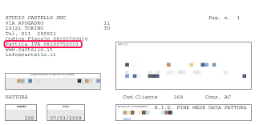

La partita IVA
Tutti coloro che hanno intenzione di intraprendere un'attività che prevede scambi di denaro necessitano di una partita IVA, ovvero un codice di 11 cifre rilasciato dall'agenzia delle entrate, che deve essere esposto su ogni documento.

Struttura
Le prime 7 cifre della partita IVA rappresentano il numero progressivo di matricola, le 3 successive indicano il codice dell'ufficio provinciale del fisco che ha rilasciato la matricola, che corrisponde al codice ISTA della provincia, i codici sono rappresentati nella tabella (fig. 1 ), mentre l'ultima cifra è una cifra di controllo, ottenuta con l'algoritmo di Luhn: si sommano le 6 cifre di posizione dispari in una varibile "X", stessa cosa per le dispari, che però sono salvate un una varibile "Y" e moltiplicate per 2, si assegna a una variabile "Z" un valore pari alla quantità di numeri con valore maggiore o uguale a 5 in posizione pari, infine si calcola il valore di "C" come complemento a 10 di "T" (X+Y+Z).

Figura 1